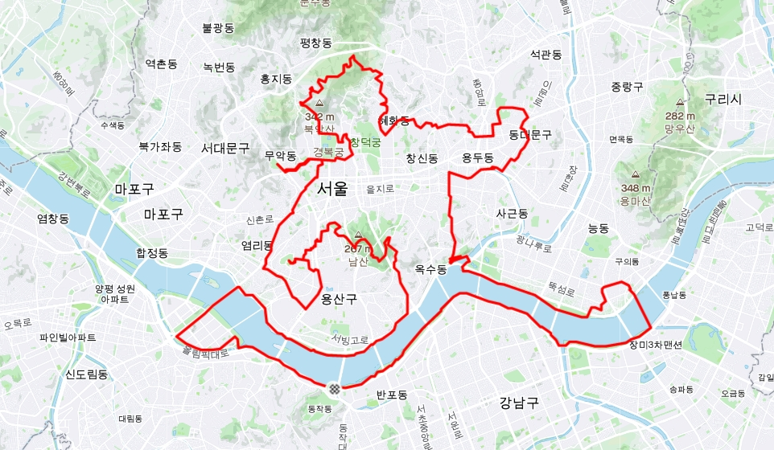
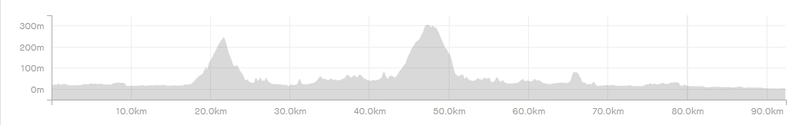

| 코스명 | 런닝맨 코스 |
| 코 스 | 한강공원-여의도(63빌딩)-남산(남산타워)-효창공원(백범김구기념관)-용산전자상가-공덕동-서대문(독립문,서대문형무소)-광화문-북촌한옥마을-청와대-북악 팔각정-성균관대학교-고려대학교-제기동(약령시장)-영휘원-경희대학교-청계천박물관-한강공원 |
| 거 리 | 92km |
| 시 간 | 5시간 32분 |
| GPX 파일 | 런닝맨코스 GPX 다운로드 |


이번 라이딩은 서울시내코스로 런닝맨 코스를 다녀왔습니다.
동작역에서 시작하여 서울시내 유명한 관광지 및 역사관등을 돌아오는 코스로 다녀온 사람들은 8월 15일에 다녀오면 아주 좋은 코스라고 하더군요
일단 동작역에서 시작하여 여의도 방향으로 라이딩을 하였으며, 여의도의 63빌딩을 거쳐 원효대교를 거쳐 한남동을 넘어 남산 업힐을 하여 남산타워에서 한숨 돌리고,
다시 북악스카이 팔각정을 목표로 용산 공덕동을 거쳐 독립문에서 한숨 돌린 후 광화문을 거쳐 한옥마을을 잠시 들렀다가 청와대를 지나 본격적으로 북악 팔각정을 목표로 업힐을
시작하였습니다.
업힐 경사가 그리 급하지는 않았지만 꽤 길게 업힐이 되면서 겨우겨우 팔각정에 올라 미리 준비한 김밥한줄과 팔각정 밑의 카페에서 따뜻한 커피한잔에 몸을 녹이니 더 없는 즐거움과
동시에 힐링을 맛볼 수 있었습니다.
이제는 다운힐 이라서 거리낌 없이 내리막길을 내려오는데 갑작스러운 초가을 날씨가 왜이리 춥던지 손을 호호 불면서 내려왔습니다.
성북동 방향으로 내려와서 제기동 경동시장을 지나 도심지를 가로질러 한강으로 나와 시원하게 달리니 왜이렇게 좋은지 자전거길의 소중함을 알 것 같았습니다.
이번 코스는 서울시내를 가로질러 관광지와 유적지등을 둘러보는 코스로서 한강을 제외하고는 대부분 일반도로와 골목길로 이루어져 있어 자전거만을 타고자 하시는 분들에게는 추천하고 싶지
않으나 저전거를 타고 서울시내을 튜어하고 싶은 분들께는 적극 추천하고 싶은 코스입니다.
열심히 돌다보면 런링맨이 그려지는 즐거움을 함께 하실 수 있습니다. ^^